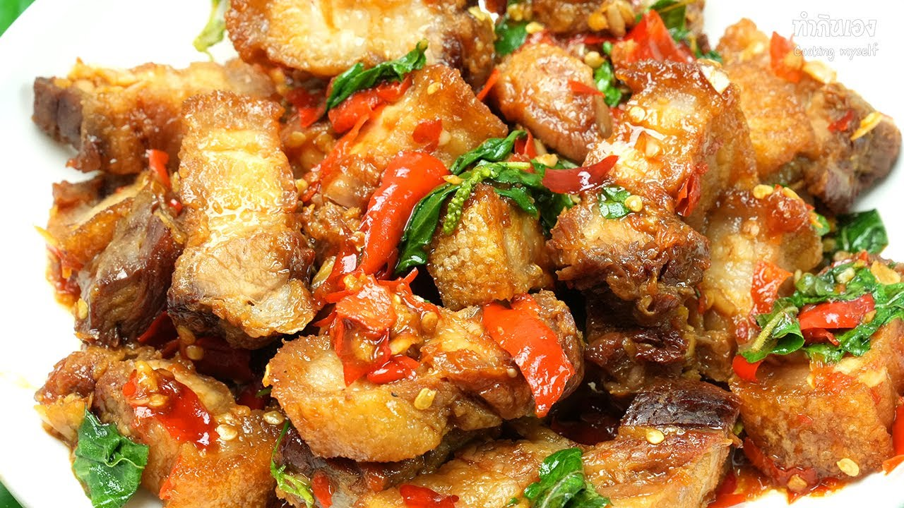

วิธีทำกระเพราหมูกรอบ

ส่วนผสม กะเพราหมูกรอบ
- ข้าวสวย 1 ถ้วย
- หมูกรอบหั่นชิ้น ตามชอบ
- กระเทียมไทย 10 กลีบ
- พริกแดงจินดา 4 เม็ด
- พริกชี้ฟ้าสีแดงหั่นเฉียง 1 เม็ด
- ซอสปรุงรส 2 ช้อนโต๊ะ
- ซีอิ๊วดำ 1 ช้อนโต๊ะ
- น้ำปลา 2 ช้อนโต๊ะ
- น้ำตาลทราย 2 ช้อนโต๊ะ
- น้ำเปล่า 2 ช้อนโต๊ะ
ขั้นตอนการทำ
- เตรียมครกและสาก หั่นกระเทียมไทย และ พริกแดงจินดา ใส่ลงไป แล้วตำให้แหลก
- ตั้งกระทะ ใส่น้ำมัน นำกระเทียมและพริกไทยใส่ลงไปแล้วผัดให้มีกลิ่นหอม
- ใส่หมูกรอบ แล้วปรุงรสด้วย ซอสปรุงรส ซีอิ๊วดำ น้ำปลา น้ำตาลทราย น้ำเปล่า ผัดให้ส่วนผสมเข้ากัน
- ใส่ใบกะเพรา ตามด้วย พริกชี้ฟ้าหั่นเฉียงลงไป ผัดคลุกเคล้าให้เข้ากัน
- ตักเสิร์ฟใส่จาน เป็นอันเสร็จ